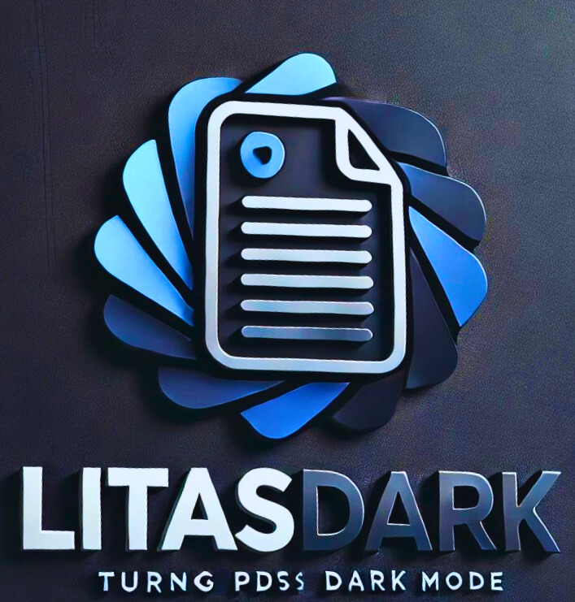

LitasDark: PDF Dark Mode Converter

Upload PDF:
Theme Settings
Choose Theme:
Dark
Darker
Darkest
Brightness:
Contrast:
Generate Preview
Convert to Dark Mode
Download Converted PDF
Start Page:
End Page:
Split PDF
Download Split PDF
Upload PDFs to Merge:
Merge PDFs
Download Merged PDF
Page Number:
Angle:
Rotate Page
Download Rotated PDF
Loading...
↑